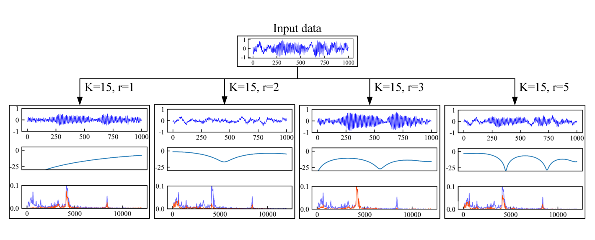

目录
基于监督迁移学习的故障诊断
- 本项目将故障诊断中的迁移学习扩展到了不同的部件之间（如轴承到齿轮箱）。
- 使用CNN和MLP作为基础架构，从源域数据中训练基模型，再将基模型迁移至相同部件的不同工况、不同部件的不同工况。
- 本项目使用了CWRU和PHM2009数据集。
- 查看论文
基于CMD的无监督迁移学习故障诊断
- 本项目解决了目标域数据无标签的问题。
- 使用CNN提取源域和目标域振动信号的特征，用Central Moment Discrepancy衡量源域和目标域特征之间的差异性，将其作为损失函数中的一项。
- 查看论文
频域融合卷积神经网络：提升无监督迁移学习故障诊断的通用架构

- 本项目提出了一种通用的网络架构：频域融合卷积神经网络Frequency-domain Fusing Convolutional Neural Network (FFCNN)，用于提升故障诊断中的无监督迁移学习的效果。
- 本项目提出使用幅频图来描述卷积的频域特性，不同大小的卷积核实际上提取振动信号的频段也不同。FFCNN将不同尺度的卷积核提取的特征进行融合，可提取不同频段的信息。
- 查看论文
用于故障诊断的神经网络结构搜索
- 本项目将神经网络结构搜索（Neural Architecture Search，NAS）应用到故障诊断中，以残差卷积网络为基础搜索每层不同的卷积核大小。
- 利用强化学习，RNN作为控制器，生成不同的网络结构，其在验证集上的准确率作为reward，使用策略梯度算法去更新RNN的参数。
- 为了加速搜索的速度，使用了权值共享的思想。
- 查看论文
故障诊断中基于one-shot的神经网络结构搜索
- 本项目使用one-shot方法来进行神经网络结构搜索，其中超网络包含了搜索空间里所有可能的网络结构。
- 首先训练超网络，超网络可以预测子网络的性能；然后使用遗传算法在搜索空间里搜索，将超网络对子网络的预测作为评价指标。
- 利用强化学习，RNN作为控制器，生成不同的网络结构，其在验证集上的准确率作为reward，使用策略梯度算法去更新RNN的参数。
- 查看论文
Mixpath：通用的one-shot神经网络结构搜索
- 本项目将one-shot方法扩展到多支路的搜索上，提出了一种Shadow BN（SBN）以保证超网训练的稳定性，并提高了超网的ranking能力。
- 首先训练超网络，超网络可以预测子网络的性能；然后使用遗传算法在搜索空间里搜索，将超网络对子网络的预测作为评价指标。
- 查看论文

{kind=link}
自动数据增强论文复现
- 本项目复现论文AutoAugment: Learning Augmentation Strategies from Data
- 使用强化学习来搜索最优的数据增强策略组合。
- 查看代码